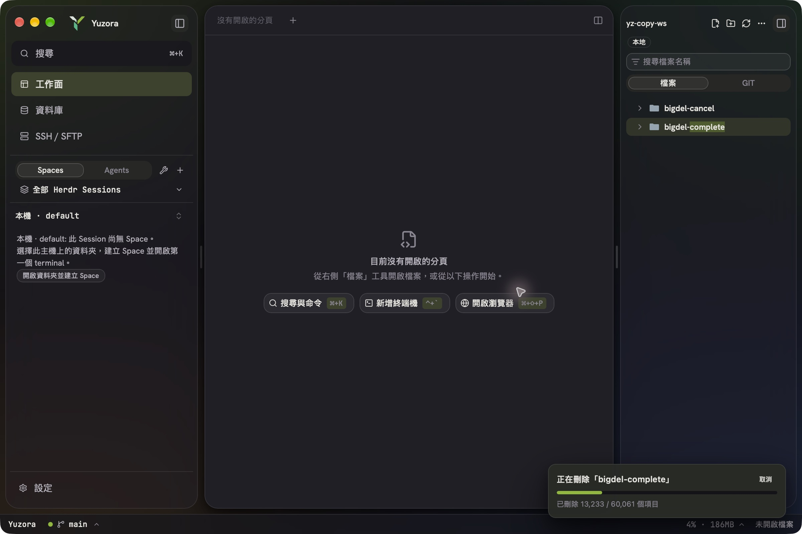
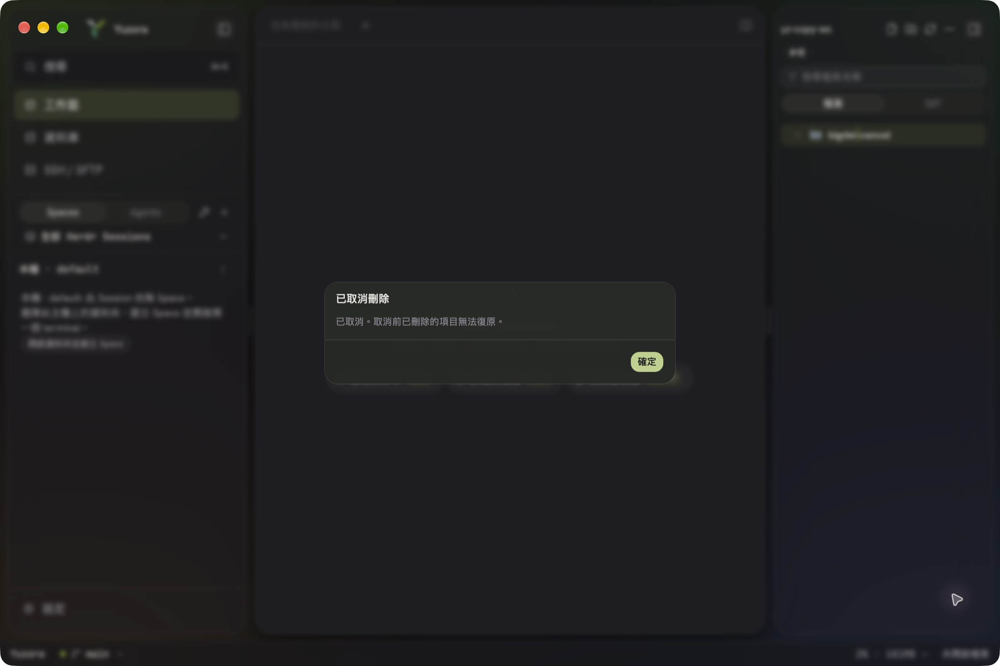

刪除檔案顯示進度條
日期：2026-10-07 · 驗收：隔離的 Yuzora Acceptance（HOME／XDG／HERDR socket 隔離）＋ pi-codex-app 原生 CUA · 測試資料：/tmp/yz-copy-ws
做了什麼
- 刪除超過 0.3 秒時，右下角通知顯示「正在刪除「名稱」」、進度條與數量；快速刪除不出現通知。
- 本機刪除先計數再刪，進度約每 0.1 秒回報一次（Tauri Channel）；可按「取消」：計數中取消不刪任何東西，刪除中取消會刷新檔案樹並提示「取消前已刪除的項目無法復原」。
- 本機單次上限由 5 萬項／10 秒改為 200 萬項、無時間限制；超過 200 萬項在計數階段就拒絕，不會刪到一半。
- SSH 遠端／SFTP 沒有進度通道：只顯示不定進度條、無取消；遠端仍是 5 萬項／10 秒，超過時改顯示可理解的「部分已刪除，請再刪一次」。
實機驗收
| 項目 | 結果 | 步驟與證據 |
|---|---|---|
| D1 | PASS | 刪除 60,061 項的資料夾：先「正在計算項目數…已找到 54,056 個」，接著 18% → 43% → 64% → 90%（「已刪除 10,725 / 60,061 個項目」…），完成後通知消失、資料夾不存在。（圖 1） |
| D2 | PASS | 刪除 250,251 項的資料夾，在「已刪除 4,247 / 250,251」時按「取消」→ 立即停止並彈出「已取消刪除：取消前已刪除的項目無法復原」；剩 239,315 個檔案。（圖 2） |
| D3 | PASS | 刪除單一小檔：完成前後都沒有出現進度通知。 |
| D4 | PASS | 計數中（已找到 25,027 個）按「取消」→ 沒有任何檔案被刪（仍 239,315 個），不跳對話框。 |


自動化驗證
- Rust：
count_tree／remove_tree_with（計數、上限、tick 中斷）、delete_pinned_reporting（事先取消不刪、最後回報總數）；手動探針delete_handles_more_entries_than_the_old_budget：60,061 項 2.6 秒刪完、26 次進度回報。 - 前端：通知出現與更新、取消按鈕、快速刪除不出通知、遠端無取消；store 的取消流程（刪到一半提示＋刷新、計數中取消不提示）。vitest 全套 3,624 通過。
src-tauri459 通過；clippy baseline 19 筆相符（fs_service.rs三筆既有警告行號下移，已同步 JSON）；fmt、typecheck、eslint（0 error）通過。- Windows 版刪除迴圈無法在本機交叉編譯（
ring缺 Windows C 標頭），已逐行對照 unix 版，待 CI 的 Windowscargo check確認。
其他
- 順手加固智慧簽出：改以
git stash push的輸出判斷是否有暫存，任何失敗路徑都會明確提示變更保留在 stash「Yuzora smart checkout」。 - 修正既有的
listing_close_releases_owned_capability_and_rejects_reuse：它以全程序/dev/fd數做嚴格相等比對，平行跑時被其他測試干擾而失敗。改為允許 50 個以內的並行雜訊（100 次循環若每次洩漏 1 個會多出 100 個）；全套 host 連跑 3 次皆過，故意注入每次 1 個 fd 的洩漏時仍會失敗（4 → 104）。 - 刪除確認按鈕由預設的「繼續」改為「刪除」：檔案樹刪除與 SFTP 遠端刪除（全專案僅這兩處破壞性確認沿用預設文字），各補一個測試。
未在使用者 repo 執行任何 git 寫入（add／commit／push）。